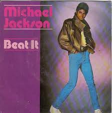
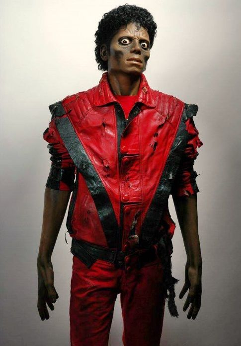
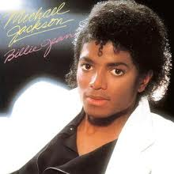

História das músicas
História de Beat It
"Beat It" (1982) é uma das músicas mais poderosas de Michael Jackson, conhecida por fundir perfeitamente o pop com o hard rock. A faixa se destaca pela mensagem de não-violência e pelo lendário solo de guitarra de Eddie Van Halen. Seu videoclipe icônico, que reuniu membros de gangues reais para resolver suas disputas por meio da dança, marcou a cultura pop e definiu a estética dos anos 80.

História de thriller
"Thriller" nasceu da vontade de Michael Jackson de criar um verdadeiro "filme de terror" em forma de música. Originalmente chamada de Starlight, a faixa ganhou sua atmosfera sombria com efeitos de portas rangendo, uivos e o famoso monólogo do ator Vincent Price. Para impulsionar as vendas do álbum, Michael investiu em um videoclipe inovador de 14 minutos dirigido por John Landis; a produção transformou os clipes musicais em cinema e imortalizou a icônica coreografia dos zumbis.X

História de Billie Jean
"Billie Jean" foi inspirada nas diversas groupies que orbitavam o Jackson 5, que frequentemente afirmavam que Michael ou seus irmãos eram pais de seus filhos. Musicalmente, a faixa quase ficou fora do álbum Thriller porque o produtor Quincy Jones não gostava da introdução longa e achava o título confuso, sugerindo mudá-lo para "Not My Lover". Michael bateu o pé, manteve a linha de baixo hipnótica intocada e transformou a canção em um marco: seu videoclipe foi o primeiro de um artista negro a quebrar a barreira racial da MTV, e foi ao som dela que o Rei do Pop apresentou o passo Moonwalk ao mundo em 1983.
